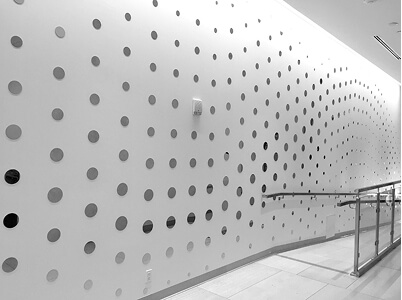
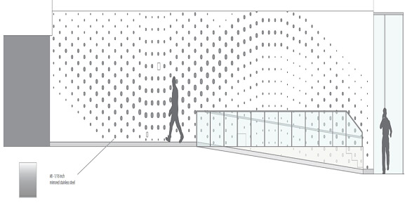
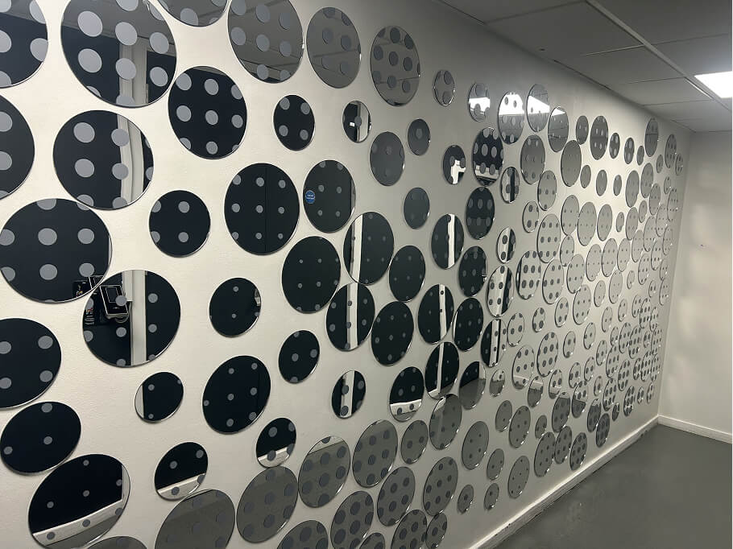

This five-day intensive workshop immerses participants in a hands-on design-build experience, where they will collaboratively design, prototype, and install a 2D interactive wall installation. Through human-centred design principles and iterative workflows, students will explore spatial storytelling while gaining practical skills in Rhinoceros 3D, Grasshopper, and digital fabrication tools. The workshop emphasises collaboration, material experimentation, and professional execution from concept to installation.


Day 1: Introduction to Design-Build Projects and Experiential Design
Day 2: Parametric Modelling and Visual Scripting with Grasshopper
Day 3: Iterative Design and Prototyping
Day 4: Digital Fabrication and Construction Techniques
Day 5: Installation and Project Completion
